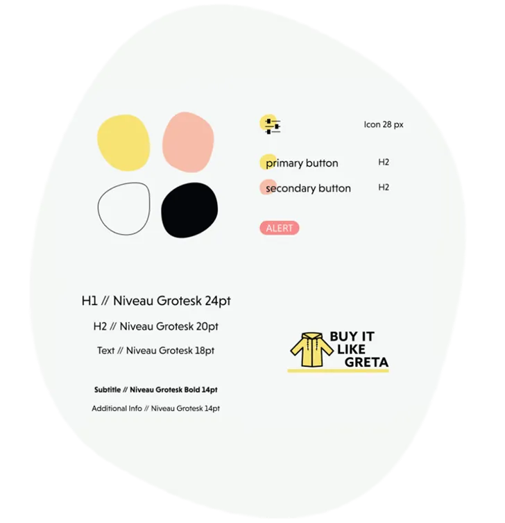
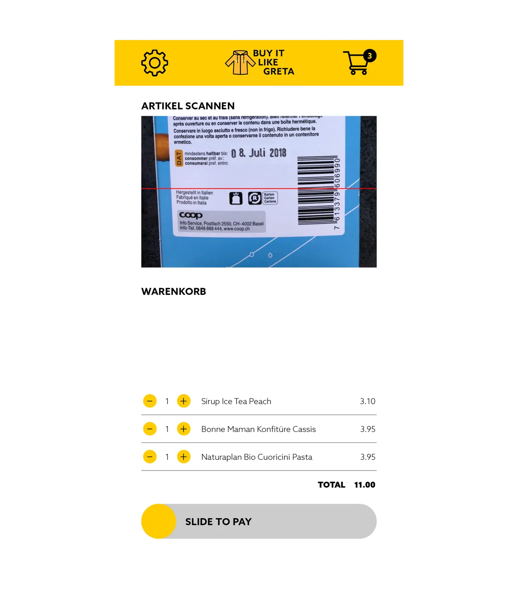
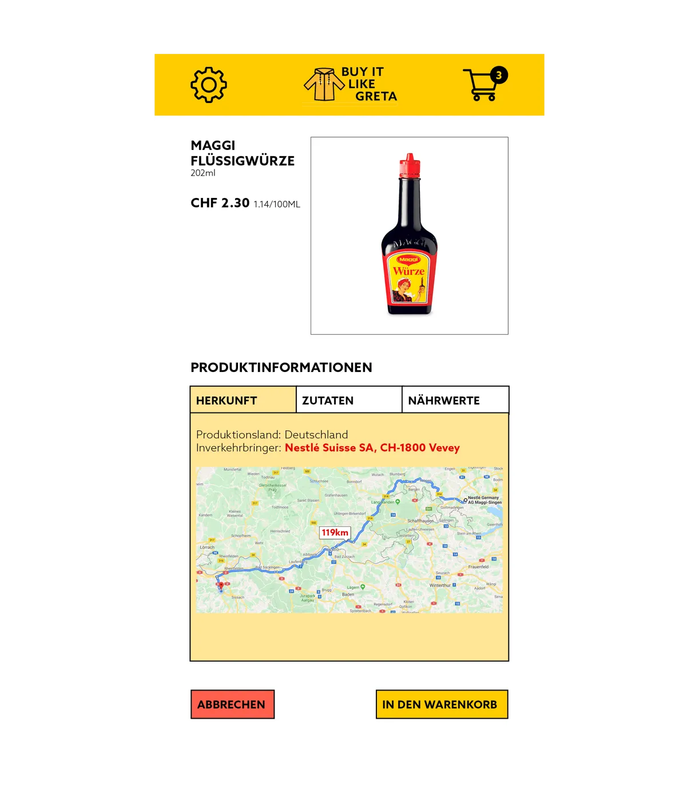

This project was part of one of my modules during my studies at the FHNW.
The goal of this project was to implement a digital product conceptually and prototypically, which is composed of the topics data and sensitization. Sensitization should play a central role in the development of the concept. The concept should answer three questions:
How can you use your digital product to make users aware of a problem and create awareness without pointing the finger at them?
How do you manage to make the use of your product an integral part of the users' everyday life, a habit?
What means do you use to achieve a change in behaviour?
Problem & Solution
"If consumers want to consider all criteria, shopping quickly becomes a research project. Take the milk question, for example: Should I choose the organic milk from a dairy that’s 200 kilometers away? Organic farming is undoubtedly good for cows and bees. However, cooperative milk from nearby farms is better for farmers and consumes less CO2 because it’s transported over shorter distances.
What means do you use to achieve a change in behaviour?
[…]
Then there’s the cookie question: Organic cookies contain palm oil, which is highly problematic from both an ecological and ethical perspective. Even sustainably produced palm oil plantations typically involve clearing rainforest.
[…]
Many would therefore wish for a label that takes all aspects into account: from ecological to fair for both humans and animals. However, according to experts, establishing such a one-size-fits-all shopping guide is difficult for several reasons."
Lahrtz, Stephanie: “If we really want to help the environment, we must learn to abstain,” in: NZZ website (German), 17.08.2019, Last checked on 23.11.2019.
Sometimes you buy a product only to discover later that it contains palm oil or is made by a company you prefer not to support. This information is often available but hard to find, especially in stressful situations when there’s no time to check labels.
We provide a shopping aid through an app that highlights questionable ingredients and clearly displays the product’s transport route and manufacturer.
The app integrates seamlessly into the shopping process. By scanning a barcode, products are added to the shopping list and checked for origin, ingredients, and manufacturer. If any aspect conflicts with the consumer’s values, they are notified. With payment possible directly in the app, there’s no need to wait at the checkout.

Scope of this project
- Research
- Personas
- Value Proposition
- Journey Map
- Wireframes
- Styleguide
- Visual Design
Research
We conducted five qualitative interviews for our project with participants from our target group. We presented five different chocolate bars: one from Nestlé, one containing palm oil, one organic, one vegan, and one from a low-cost private label. The interviewees were asked to choose a chocolate and verbalize their decision-making process.
The interviews highlighted a need for assistance with sustainable shopping. Participants expressed time constraints and stress as significant pain points, with three out of five stating they never have enough time to shop. Disruptions such as waiting in line, moving items from shelf to cart, and payment processes were identified as bothersome. Here are some key quotes:
«Whether the ginger comes from China or Spain makes a big difference to me.»
«If I feel like chocolate, I don't care if it costs 1 or 3 francs in the end.»
«I look out for vegan, FairTrade and organic, I don't know what the other ones (labels) mean anyway.»
«If possible, I try to avoid products from big companies and I try to support small businesses.»
«[…] and then I read the label more carefully: the product contains ecologically acceptable palm oil. Then I said to myself: labels no thanks, I rather take a closer look at the product and what's in it»
Wireframes

